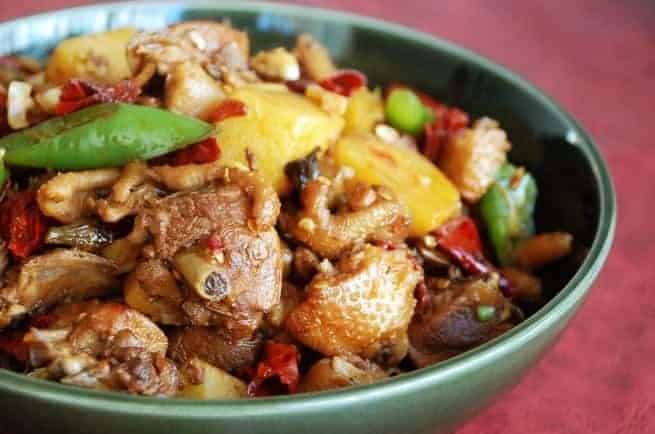

Xinjiang Big Plate Chicken

Description
Big plate chicken, also know as "Da Pan Ji", is a chicken stew dish originated in Xinjiang. It is said to have been made by a recipe that combines roots from sichuan or either Hunan. The main ingredients of the dish are chicken, bell peppers, and potatoes, with onions, garlic, ginder and chili peppers. Seasonings star anise, cumis, and ground Sichuan peppers.
Big plate chicken is prepared with bite size chicken, and coarsely chopped vegetables. It is usually served with laghman and nan
Ingredients
- Chicken
- Potatoes
- Green and Red Peppers
- Onions
- Garlic
- Ginger
- Sichuan Peppercorn
- Cinnamon
Instructions
- Start by marinating the chicken. Cut the chicken thighs into bite-sized pieces and transfer to a bowl with the light soy sauce, sesame oil, shaoxing wine, and cornstarch. Set aside for 20 minutes while you prep the rest of the ingredients.
- When you’re ready to cook, heat the oil in a wok over low heat. Add the star anise, cinnamon stick, bay leaves, ginger, garlic, Sichuan peppercorns, whole dried red chilies, and sugar. Cook this mixture for 2 minutes, making sure they don’t burn.
- Add the potatoes and carrots and stir-fry for a minute. Then add the dark soy sauce, light soy sauce, Shaoxing wine, and 3 cups water. Bring to a boil and reduce the heat to medium. Cover the wok and cook for 15 minutes, until the potatoes are tender.
- While the chicken is cooking, bring a pot of water to a boil. Follow the package instructions to cook the dried noodle of your choice (preferably a thicker-style flat noodle). Drain.
- Once the potatoes are cooked through, by now, there should be at least 1 – 1-1/2 cup of liquid in the wok, so add more water if needed. To your wok, stir in the bell peppers. Cover and simmer for another 5 minutes. Add the scallions, and season with salt to taste.
- Now transfer the noodles to a large plate, and cover with your chicken and vegetables. Sprinkle with scallions and serve immediately!